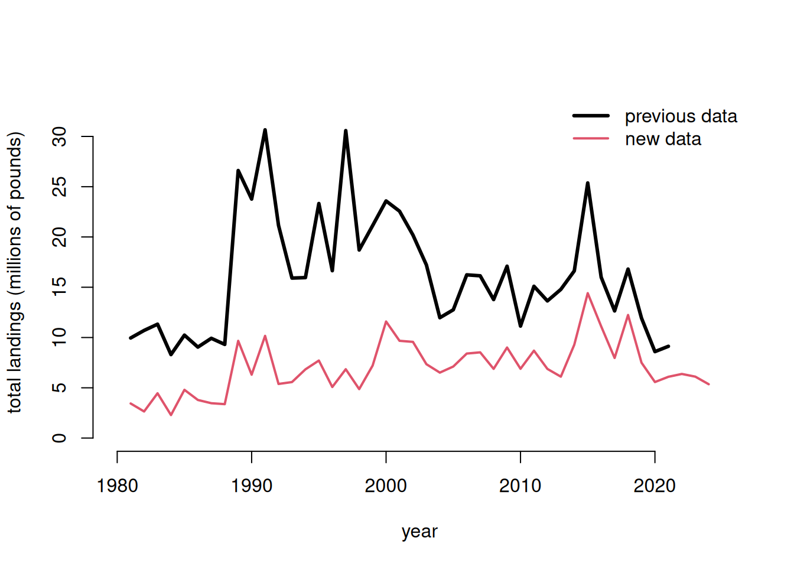
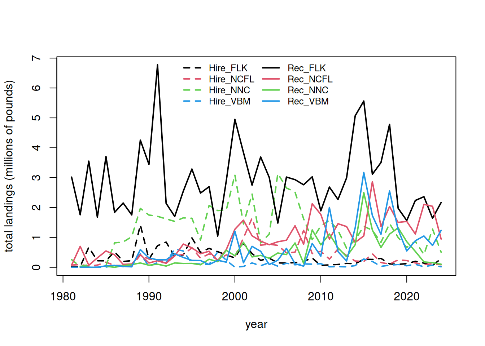
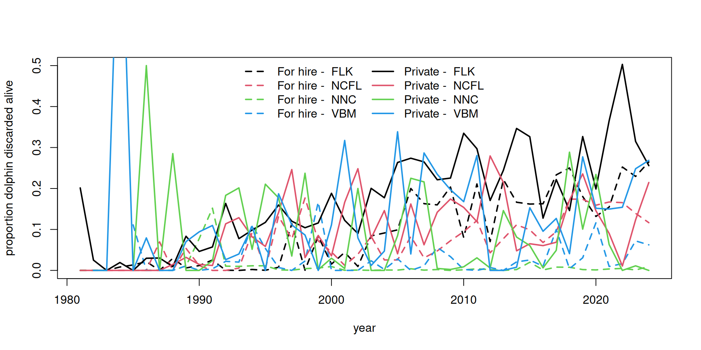
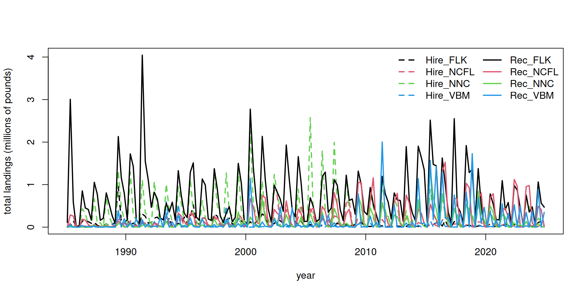
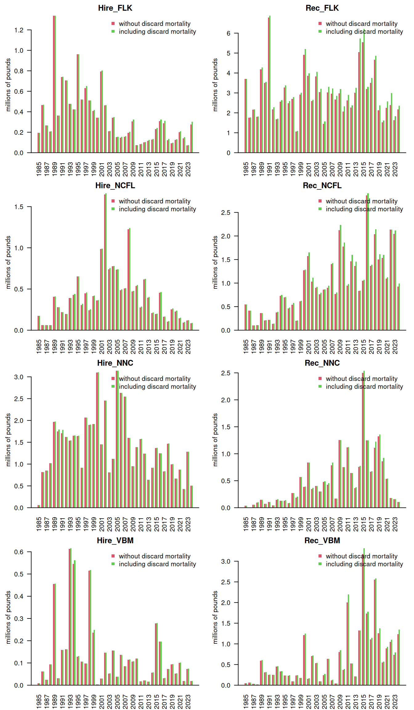

# clear workspace
rm(list = ls())
# libraries
#library(ROracle)
#library(keyring)
#con = dbConnect(dbDriver("Oracle"), username = keyring::key_list()[1,2],
# password = key_get("mandy.karnauskas@noaa.gov", keyring::key_list()[1,2]),
# dbname = "SECPR")
#dat <- dbGetQuery(con, "SELECT *
# FROM rdi.V_REC_ACL_MRIP_FES_IMP@secapxdv_dblk.sfsc.noaa.gov")
# read in data file
#dat <- readRDS("C://Users/mandy.karnauskas/Desktop/CONFIDENTIAL/rec_data_for_mandy.rds")
#head(dat)
#apply(dat[2:18], 2, table, useNA = "always")
# confirm nomenclature for dolphin and subset by species --------------------------
#table(dat$NEW_COM[grep("dolphin", dat$NEW_COM)])
#table(dat$NEW_SCI[grep("dolphin", dat$NEW_COM)])
#d <- dat[which(dat$NEW_COM == "dolphin"), ]
#apply(d[2:18], 2, table, useNA = "always")
#d <- d[which(d$YEAR <= 2024), ] # set terminal year here
#d <- d[which(d$COUNCILREG != 11), ] # take out PR catches
#write.csv(d, file = "data/MRIP_data_Oct2026.csv")
d <- read.csv("data/MRIP_data_Oct2026.csv")
tot <- tapply(d$LBSEST_SECWWT, d$YEAR, sum, na.rm = T)3 NOAA Fisheries recreational landings data
Here we will partition recreational landings data from NOAA Fisheries’ Marine Recreational Information Program (MRIP), a standardized, peer-reviewed suite of recreational fishing surveys used to produce catch and effort estimates for quota monitoring and stock assessment in the United States. MRIP is a standardized survey suite that employs a complex statistical sampling design stratified across time, regions of the coast, and different fishing modes, which allows the intercept data to be scaled up by effort estimates to calculate total catches.
3.1 Data access and upload
Data are downloaded directly from the Miami server using the files provided to SERO for ACL monitoring. The current location is: M://SFD/SECM-SFD/ACL/2025_Jun23_MRIP_MRFSS/. The landings are in FES MRIP and the units are in pounds whole weight.
3.2 Separate Gulf and Atlantic recreational landings
Now we filter the data set to separate out the Gulf versus Atlantic landings.
# codes for WFL regions: 1 (NW FL Panhandle- Escambia to Dixie co.), 2 (SW FL Peninsula- Levy to Collier co), 3 (FL Keys- Monroe co.)
# subregional codes: 6 is Atlantic and 7 is Gulf
table(d$FL_REG, d$SUB_REG, useNA = "always")
4 5 6 7 <NA>
1 0 0 0 387 0
2 0 0 0 110 0
3 0 0 0 568 0
4 0 0 1022 0 0
5 0 0 312 0 0
<NA> 96 585 3843 2426 0unique(d$NEW_STA) [1] "GA" "LA" "SC" "AL" "FLE" "NC" "FLE/GA" "AL/FLW"
[9] "FLW" "MS" "RI" "NY" "VA" "DE" "NJ" "MD"
[17] "CT" "MA" "TX" "LA/MS" d1 <- d[which(d$COUNCILREG == 6), ]
dg <- d[which(d$COUNCILREG == 7), ]
table(d1$COUNCILREG)
6
5858 Now we can summarize the total dolphin landings in weight for the U.S. Atlantic, and compare to previous values used for quota monitoring. The Fishing Effort Survey (FES) was revised in 2026 to improve the accuracy of estimates by mitigating potential overreporting of fishing trips. The calibrations resulting from this survey revision have significantly changed the recreational estimates from the previous FES design.
# summarize by year and compare --------------------------
tot1 <- tapply(d1$LBSEST_SECWWT, d1$YEAR, sum, na.rm = T)
#head(tot1)
old <- read.csv("data/RecreationalDolphinLandings_SAandGOM_MLarkin.csv", skip = 6)
plot(old$Year, old$ATL/10^6, type = "l", xlab = "year",
ylab = "total landings (millions of pounds)", lwd = 3,
xlim = c(1980, 2025), ylim = c(0, 33), bty = "n")
lines(as.numeric(names(tot1)), tot1/10^6, lwd = 2, col = 2, lty = 1)
legend("topright", c("previous data", "new data"), col = c(1, 2), lwd = c(3, 2), lty = c(1, 1), bty = "n")
3.3 Partition landings by area and sector
Now we will partition out the total landings according to the dolphin MSE areas. The areas are as follows:
- FLK: Florida Keys to Indian River County County (FL)
- NCFL: Brevard (FL) to Southern NC (South of Hatteras)
- NNC: Northern NC (North of Hatteras to NC/VA border)
- VBM: Virginia to Maine
# separate out 4 regions --------------------------
d1$region <- "VBM"
# select for FLK
# FL_REG codes: 4: SE FL- Miami-Dade to Indian River County.; 5: NE FL- Brevard to Nassau County
table(d1$FL_REG, d1$NEW_STA, useNA = "always")
CT DE FLE FLE/GA GA MA MD NC NJ NY RI SC VA <NA>
4 0 0 1022 0 0 0 0 0 0 0 0 0 0 0
5 0 0 312 0 0 0 0 0 0 0 0 0 0 0
<NA> 14 114 0 1801 54 20 125 1344 108 73 62 644 165 0d1$region[which(d1$FL_REG == 3 | d1$FL_REG == 4)] <- "FLK"
# select for NCFL
d1$region[which(d1$FL_REG == 5)] <- "NCFL"
lis <- c("SC", "GA", "FLE/GA") # NCFL states
d1$region[which(d1$NEW_STA %in% lis)] <- "NCFL"
# NC_REG codes: N: North of Cape Hatteras; S: South of Cape Hatteras
table(d1$NC_REG, d1$NEW_STA, useNA = "always")
CT DE FLE FLE/GA GA MA MD NC NJ NY RI SC VA <NA>
N 0 0 0 0 0 0 0 420 0 0 0 0 0 0
S 0 0 0 0 0 0 0 338 0 0 0 0 0 0
<NA> 14 114 1334 1801 54 20 125 586 108 73 62 644 165 0d1$region[which(d1$NC == "S")] <- "NCFL"
# select for NNC
d1$region[which(d1$NC == "N")] <- "NNC"
table(d1$FL_REG, d1$NEW_STA, d1$region), , = FLK
CT DE FLE FLE/GA GA MA MD NC NJ NY RI SC VA
4 0 0 1022 0 0 0 0 0 0 0 0 0 0
5 0 0 0 0 0 0 0 0 0 0 0 0 0
, , = NCFL
CT DE FLE FLE/GA GA MA MD NC NJ NY RI SC VA
4 0 0 0 0 0 0 0 0 0 0 0 0 0
5 0 0 312 0 0 0 0 0 0 0 0 0 0
, , = NNC
CT DE FLE FLE/GA GA MA MD NC NJ NY RI SC VA
4 0 0 0 0 0 0 0 0 0 0 0 0 0
5 0 0 0 0 0 0 0 0 0 0 0 0 0
, , = VBM
CT DE FLE FLE/GA GA MA MD NC NJ NY RI SC VA
4 0 0 0 0 0 0 0 0 0 0 0 0 0
5 0 0 0 0 0 0 0 0 0 0 0 0 0table(d1$NC_REG, d1$NEW_STA, d1$region) # check classification, , = FLK
CT DE FLE FLE/GA GA MA MD NC NJ NY RI SC VA
N 0 0 0 0 0 0 0 0 0 0 0 0 0
S 0 0 0 0 0 0 0 0 0 0 0 0 0
, , = NCFL
CT DE FLE FLE/GA GA MA MD NC NJ NY RI SC VA
N 0 0 0 0 0 0 0 0 0 0 0 0 0
S 0 0 0 0 0 0 0 338 0 0 0 0 0
, , = NNC
CT DE FLE FLE/GA GA MA MD NC NJ NY RI SC VA
N 0 0 0 0 0 0 0 420 0 0 0 0 0
S 0 0 0 0 0 0 0 0 0 0 0 0 0
, , = VBM
CT DE FLE FLE/GA GA MA MD NC NJ NY RI SC VA
N 0 0 0 0 0 0 0 0 0 0 0 0 0
S 0 0 0 0 0 0 0 0 0 0 0 0 0# summarize by Gulf and Atlantic regions and check against total -----------------------
atl <- tapply(d1$LBSEST_SECWWT, list(d1$YEAR, d1$region), sum, na.rm = T)
GULF <- tapply(dg$LBSEST_SECWWT, dg$YEAR, sum, na.rm = T)
table(rownames(atl) == names(GULF))
TRUE
44 rec <- cbind(GULF, atl)
#plot(rowSums(rec), tot)
rowSums(rec)/tot1981 1982 1983 1984 1985 1986 1987 1988 1989 1990 1991 1992 1993 1994 1995 1996
1 1 1 NA 1 1 1 1 1 1 1 1 1 1 1 1
1997 1998 1999 2000 2001 2002 2003 2004 2005 2006 2007 2008 2009 2010 2011 2012
1 1 1 1 1 1 1 1 1 1 1 1 1 1 1 1
2013 2014 2015 2016 2017 2018 2019 2020 2021 2022 2023 2024
1 1 1 1 1 1 1 1 1 1 1 1 write.csv(rec, file = "data/recLandings.csv")Now we will separate out the landings by recreational sector and plot the totals by region and sector.
# separate out by for hire vs. private rec --------------------------
d1$sector <- "Hire"
d1$sector[which(d1$NEW_MODEN == "Shore")] <- "Rec"
d1$sector[which(d1$NEW_MODEN == "Priv")] <- "Rec"
table(d1$sector, d1$NEW_MODEN, useNA = "always") # check classification
Cbt Cbt/Hbt Hbt Priv Shore <NA>
Hire 1301 119 2897 0 0 0
Rec 0 0 0 1523 18 0
<NA> 0 0 0 0 0 0tot <- tapply(d1$LBSEST_SECWWT, list(d1$YEAR, d1$region, d1$sector), sum, na.rm = T)
head(tot), , Hire
FLK NCFL NNC VBM
1981 14533.54 75168.19 256755.24 1400.247
1982 23195.34 92271.42 27578.44 2749.224
1983 670399.83 41784.04 88690.53 5198.620
1984 219429.57 74658.81 NA 4203.048
1985 217149.05 172989.65 58514.13 8880.857
1986 524662.92 63555.89 817192.26 61658.193
, , Rec
FLK NCFL NNC VBM
1981 3017639 72976.50 NA NA
1982 1758531 701251.63 34417.89 4035.769
1983 3552373 67829.08 25299.94 3021.317
1984 1675477 315184.14 NA 0.000
1985 3707418 547472.57 35178.51 50092.881
1986 1837628 418520.00 1209.10 63758.172fin <- data.frame(cbind(tot[, , 1], tot[, , 2]))
names(fin) <- c("Hire_FLK", "Hire_NCFL", "Hire_NNC", "Hire_VBM",
"Rec_FLK", "Rec_NCFL", "Rec_NNC", "Rec_VBM")
head(fin) Hire_FLK Hire_NCFL Hire_NNC Hire_VBM Rec_FLK Rec_NCFL Rec_NNC
1981 14533.54 75168.19 256755.24 1400.247 3017639 72976.50 NA
1982 23195.34 92271.42 27578.44 2749.224 1758531 701251.63 34417.89
1983 670399.83 41784.04 88690.53 5198.620 3552373 67829.08 25299.94
1984 219429.57 74658.81 NA 4203.048 1675477 315184.14 NA
1985 217149.05 172989.65 58514.13 8880.857 3707418 547472.57 35178.51
1986 524662.92 63555.89 817192.26 61658.193 1837628 418520.00 1209.10
Rec_VBM
1981 NA
1982 4035.769
1983 3021.317
1984 0.000
1985 50092.881
1986 63758.172matplot(rownames(fin), fin/10^6, lty = c(rep(2, 4), rep(1, 4)),
col = rep(1:4, 2), type = "l", lwd = 2,
xlab = "year", ylab = "total landings (millions of pounds)")
legend("top", colnames(fin), lty = c(rep(2, 4), rep(1, 4)), col = rep(1:4, 2),
lwd = 2, ncol = 2, bty = "n", cex = 0.8)
# check that totals match
cor(rowSums(fin, na.rm = T), tot1)[1] 1mean(rowSums(fin, na.rm = T) - tot1) # very tiny differences[1] -9.52489e-11Here are the landings (in pounds) for years 1981 to 2024.
3.4 Looking at extent of discarding
Discard estimates (known as B2 estimates) are provided in numbers by the MRIP survey but are not available in the Southeast Region Headboat Survey. We can look at the overall numbers of dolphinfish caught versus reported released from the MRIP survey to get an understanding of the extent of discarding.
d1$perdis <- d1$B2 / (d1$AB1 + d1$B2) # percent discarded is B2 (fish released alive) / total
# calculate mean discard rate by year, region, sector ----------------
dis <- tapply(d1$perdis, list(d1$YEAR, d1$region, d1$sector), mean, na.rm = T)
disr <- tapply(d1$perdis, list(d1$region, d1$sector), mean, na.rm = T)
matplot(rownames(dis), cbind(dis[, , 1], dis[, , 2]), lty = c(rep(2, 4), rep(1, 4)), col = rep(1:4, 2),
type = "l", lwd = 2, xlab = "year", ylab = "proportion dolphin discarded alive", ylim = c(0, 0.5))
legend("top", c(paste("For hire - ", colnames(dis)), paste("Private - ", colnames(dis))),
lty = c(rep(2, 4), rep(1, 4)), col = rep(1:4, 2), lwd = 2, ncol = 2, bty = "n")
cat("Discarding rates by region and sector - all years:\n")Discarding rates by region and sector - all years:round(disr * 100, 2) # discarding rates by region and sector Hire Rec
FLK 9.57 17.56
NCFL 9.44 11.23
NNC 0.94 9.62
VBM 2.94 12.69cat("Discarding rates by region and sector - last 5 years:\n")Discarding rates by region and sector - last 5 years:round(colMeans(tail(dis, 5)) * 100, 2) # discarding rates by region and sector - last 5 years Hire Rec
FLK 20.66 32.75
NCFL 14.95 11.69
NNC 0.40 6.17
VBM 5.54 19.45cat("Discarding rates by region and sector - most recent year:\n")Discarding rates by region and sector - most recent year:round(colMeans(tail(dis, 1)) * 100, 2) # discarding rates by region and sector - most recent year Hire Rec
FLK 26.47 25.58
NCFL 11.65 21.46
NNC 0.94 0.00
VBM 6.24 26.86# output discarding rates for later use
dismat <- data.frame(rownames(dis), dis[, , 1], dis[, , 2])
names(dismat) <- c("year", paste0(sort(rep(dimnames(dis)[[3]], 4)), "_", rep(dimnames(dis)[[2]], 2)))
head(dismat) year Hire_FLK Hire_NCFL Hire_NNC Hire_VBM Rec_FLK Rec_NCFL Rec_NNC
1981 1981 0.000000000 NaN 0 NaN 0.20137345 0 NA
1982 1982 0.000000000 NaN 0 NaN 0.02513875 0 0.0
1983 1983 0.000000000 0 0 0.0000000 0.00000000 0 0.0
1984 1984 0.008292824 0 NA NaN 0.01925124 0 NA
1985 1985 0.013356928 0 0 0.1111111 0.00000000 0 0.0
1986 1986 0.021477212 0 0 0.0000000 0.02968811 0 0.5
Rec_VBM
1981 NA
1982 0.00000000
1983 0.00000000
1984 1.00000000
1985 0.00000000
1986 0.07934897According to the MRIP survey and the reported numbers, discarding generally increases over time, excluding some highly anomalous estimates from the early years which are driven by low sample sizes. Discarding is generally higher in the private sector compared to the for-hire sector, and is highest in the Florida Keys region.
3.5 Split the landings by season
The dolphin MSE operates on a seasonal time step and thus the landings and discards must by parsed apart by individual season and year. This is not straightforward because MRIP estimates are reported in two-month waves (Jan - Feb, Mar - Apr, May - Jun, etc.), and the seasons are 3-month periods (Dec - Feb, Mar - May, Jun - Aug, Sep - Nov). For the two waves that have to be split into seasons (e.g., December is lumped with January and February; June is lumped with July and August), we split the wave 50/50%, i.e, we make the assumption that half of the landings in that wave occurs in one season and the other half occurs in the next season.
# define seasons -----------------------------
table(d1$WAVE, useNA = "always")
0 1 2 3 4 5 6 <NA>
5 331 624 1109 1324 1011 503 951 d1$YRWAVE <- paste0(d1$YEAR, "_", d1$WAVE)
totw <- tapply(d1$LBSEST_SECWWT, list(d1$YRWAVE, d1$region, d1$sector), sum, na.rm = T)
f <- data.frame(cbind(totw[, , 1], totw[, , 2]))
names(f) <- c("Hire_FLK", "Hire_NCFL", "Hire_NNC", "Hire_VBM", "Rec_FLK", "Rec_NCFL", "Rec_NNC", "Rec_VBM")
head(f) Hire_FLK Hire_NCFL Hire_NNC Hire_VBM Rec_FLK Rec_NCFL Rec_NNC
1981_2 NA NA NA NA 479273.57 46492.93 NA
1981_3 NA NA 254049.420 NA 1957732.15 NA NA
1981_4 10785.237 NA 2705.821 NA 465373.68 26483.57 NA
1981_5 3748.301 NA NA NA 64332.66 NA NA
1981_6 NA NA NA NA 50926.48 NA NA
1981_NA NA 75168.19 NA 1400.247 NA NA NA
Rec_VBM
1981_2 NA
1981_3 NA
1981_4 NA
1981_5 NA
1981_6 NA
1981_NA NAf$YEAR <- as.numeric(substr(rownames(f), 1, 4))
f$WAVE <- as.numeric(substr(rownames(f), 6, 8))
head(f) # table with landings separated by wave and year Hire_FLK Hire_NCFL Hire_NNC Hire_VBM Rec_FLK Rec_NCFL Rec_NNC
1981_2 NA NA NA NA 479273.57 46492.93 NA
1981_3 NA NA 254049.420 NA 1957732.15 NA NA
1981_4 10785.237 NA 2705.821 NA 465373.68 26483.57 NA
1981_5 3748.301 NA NA NA 64332.66 NA NA
1981_6 NA NA NA NA 50926.48 NA NA
1981_NA NA 75168.19 NA 1400.247 NA NA NA
Rec_VBM YEAR WAVE
1981_2 NA 1981 2
1981_3 NA 1981 3
1981_4 NA 1981 4
1981_5 NA 1981 5
1981_6 NA 1981 6
1981_NA NA 1981 NAf[is.na(f)] <- 0
f <- f[which(f$YEAR >= 1985), ]
table(f$YEAR)
1985 1986 1987 1988 1989 1990 1991 1992 1993 1994 1995 1996 1997 1998 1999 2000
7 7 7 7 7 7 7 7 7 7 7 7 6 6 6 6
2001 2002 2003 2004 2005 2006 2007 2008 2009 2010 2011 2012 2013 2014 2015 2016
6 6 6 6 6 6 6 6 6 6 6 6 7 7 7 6
2017 2018 2019 2020 2021 2022 2023 2024
6 6 6 6 6 6 6 6 table(f$WAVE)
0 1 2 3 4 5 6
15 40 40 40 40 40 40 # deal with NAs in many locations ---------------
# calculate percentages of landings by wave, for each region and fleet
avw <- tapply(d1$LBSEST_SECWWT, list(d1$WAVE, d1$region, d1$sector), sum, na.rm = T)
avw <- avw[-1, , ]
avw <- data.frame(cbind(avw[, , 1], avw[, , 2]))
names(avw) <- c("Hire_FLK", "Hire_NCFL", "Hire_NNC", "Hire_VBM", "Rec_FLK", "Rec_NCFL", "Rec_NNC", "Rec_VBM")
avwp <- apply(avw, 2, function (x) x / sum(x, na.rm = T))
#colSums(avwp, na.rm = T)
# go through each column, find NAs and fill in waves by percentages
pre_colsum <- colSums(f, na.rm = T) # column sums to check later
lis <- which(f$WAVE == 0) # list of rows with NA wave data
for (i in 1:8) { # loop through each column
for(j in lis) { # loop through list of NA waves
if (f[j, i] > 0) { # if there are NA wave landings, split by known proportion from other years
miscatch <- avwp[, i] * f[j, i] # missing landings are known proportion * NA wave landings
f[which(f$YEAR == f$YEAR[j] & f$WAVE != 0), i] <-
f[which(f$YEAR == f$YEAR[j] & f$WAVE != 0), i] + miscatch # add in missing landings
f[j, i] <- 0 # set to zero after landings is attributed to waves
}
}
}
f[lis, 1:8] # should be all zeros now Hire_FLK Hire_NCFL Hire_NNC Hire_VBM Rec_FLK Rec_NCFL Rec_NNC Rec_VBM
1985_NA 0 0 0 0 0 0 0 0
1986_NA 0 0 0 0 0 0 0 0
1987_NA 0 0 0 0 0 0 0 0
1988_NA 0 0 0 0 0 0 0 0
1989_NA 0 0 0 0 0 0 0 0
1990_NA 0 0 0 0 0 0 0 0
1991_NA 0 0 0 0 0 0 0 0
1992_NA 0 0 0 0 0 0 0 0
1993_NA 0 0 0 0 0 0 0 0
1994_NA 0 0 0 0 0 0 0 0
1995_NA 0 0 0 0 0 0 0 0
1996_NA 0 0 0 0 0 0 0 0
2013_0 0 0 0 0 0 0 0 0
2014_0 0 0 0 0 0 0 0 0
2015_0 0 0 0 0 0 0 0 0pos_colsum <- colSums(f, na.rm = T)
pre_colsum[1:8] == pos_colsum[1:8] # check that landings were parsed correctly - column sums should be identical Hire_FLK Hire_NCFL Hire_NNC Hire_VBM Rec_FLK Rec_NCFL Rec_NNC Rec_VBM
TRUE TRUE TRUE TRUE TRUE TRUE TRUE TRUE f <- f[which(f$WAVE != 0), ] # remove NA waves which now contain no landings
# split waves 3 and 6 50/50% to parse into seasons ------------------
lis <- which(f$WAVE == 3 | f$WAVE == 6) # list of 3 and 6 waves for all years
for (i in lis) { # go through list of waves
temp <- f[i, ] / 2 # split landings in half
temp[9] <- f$YEAR[i] # reformat year and wave data columns
temp[10] <- f$WAVE[i]
temp <- rbind(temp, temp) # create two half-waves and relabel with new wave reference number
temp[1, 10] <- temp[1, 10] - 0.5
temp[2, 10] <- temp[2, 10] + 0.5
f <- rbind(f, temp) # concatenate with main data table
}
f <- f[-lis, ] # remove waves that have been split in half
pos_colsum <- colSums(f, na.rm = T)
pre_colsum[1:8] == pos_colsum[1:8] # check that landings were parsed correctly - column sums should be identical Hire_FLK Hire_NCFL Hire_NNC Hire_VBM Rec_FLK Rec_NCFL Rec_NNC Rec_VBM
TRUE TRUE TRUE TRUE TRUE TRUE TRUE TRUE f <- f[order(f$YEAR, f$WAVE), ] # reorder table in chronological order
f$YEAR[which(f$WAVE == 6.5)] <- f$YEAR[which(f$WAVE == 6.5)] + 1 # add year to December wave so it gets summed with following year
f$WAVE[which(f$WAVE == 6.5)] <- 0.5 # change December wave to small number so it gets summed with Jan/Feb
table(f$WAVE)
0.5 1 2 2.5 3.5 4 5 5.5
40 40 40 40 40 40 40 40 f$seas <- cut(f$WAVE, breaks = c(0, 1.5, 3, 4.5, 6))
#table(f$seas)
f$seas1 <- NA
f$seas1[which(f$seas == "(0,1.5]")] <- "DJF" # Dec Jan Feb is 0.5 and 1
f$seas1[which(f$seas == "(1.5,3]")] <- "MAM" # Mar Apr May is 2 and 2.5
f$seas1[which(f$seas == "(3,4.5]")] <- "JJA" # Jun Jul Aug is 3.5 and 4
f$seas1[which(f$seas == "(4.5,6]")] <- "SON" # Sep Oct Nov is 5 and 5.5
temp <- tapply(f[, 1], list(f$seas1, f$YEAR), sum, na.rm = T)
temp1 <- matrix(temp)
for (i in 2:8) {
temp2 <- matrix(tapply(f[, i], list(f$seas1, f$YEAR), sum, na.rm = T))
temp1 <- cbind(temp1, temp2)
}
findat <- data.frame(sort(rep(as.numeric(colnames(temp)), 4)),
rep(rownames(temp), ncol(temp)), temp1)
names(findat) <- c("year", "season", names(f)[1:8])
colSums(f[, 1:8], na.rm = T) == colSums(findat[, 3:10], na.rm = T) # check that total landings are equal before and after parsing Hire_FLK Hire_NCFL Hire_NNC Hire_VBM Rec_FLK Rec_NCFL Rec_NNC Rec_VBM
TRUE TRUE TRUE TRUE TRUE TRUE TRUE TRUE findat <- findat[- which(findat$year == max(findat$year)), ] # take out partial year that was created with Dec rolling over last yearWe plot the results by region and sector, over the time series of year and season. We can clearly see the seasonality in the landings by region.
findat$yrseas <- findat$year + as.numeric(as.factor(findat$season))/4-0.125
matplot(findat$yrseas, findat[, 3:10]/10^6, lty = c(rep(2, 4), rep(1, 4)), col = rep(1:4, 2), type = "l", lwd = 2,
xlab = "year", ylab = "total landings (millions of pounds)")
legend("topright", colnames(findat[, 3:10]), lty = c(rep(2, 4), rep(1, 4)), col = rep(1:4, 2), lwd = 2, ncol = 2, bty = "n")
# check that totals match
cbind(colSums(findat[, 3:10], na.rm = T), colSums(fin[-c(1:5), ], na.rm = T)) [,1] [,2]
Hire_FLK 13661039 13458464
Hire_NCFL 16122533 15950128
Hire_NNC 56635370 56576965
Hire_VBM 5268522 5259641
Rec_FLK 117994213 114306480
Rec_NCFL 40228084 39701330
Rec_NNC 19755660 19720482
Rec_VBM 26537804 26487712# the values should be close but slightly >1 because the last data set includes December 1985 data as part of 1986
colSums(findat[, 3:10], na.rm = T) / colSums(fin[-c(1:5), ], na.rm = T) Hire_FLK Hire_NCFL Hire_NNC Hire_VBM Rec_FLK Rec_NCFL Rec_NNC Rec_VBM
1.015052 1.010809 1.001032 1.001688 1.032262 1.013268 1.001784 1.001891 3.6 Add the post-release discard mortality
Lastly, we integrate post-release discard mortality into the total catch. MRIP reports dead discards not available for inspection within its B1 category, but there is also mortality in a proportion of fish that are released alive (B2 catch). The percent of fish released alive by year and area was calculated in section 3.4. These B2 catch estimates are only available in numbers, not weight, so in applying these percentages to the landings we must assume that fish released alive are on average the same weight as retained fish. Individual fish may be released alive if they are smaller in size or if they fall under the size limit (only Florida to South Carolina); hence it should be noted that this assumption could bias the post-release mortality estimates in weight high. We use the discard mortality rate of 0.25 as estimated by Rudershausen et al. (2019) and apply it to the percentage of live discards (B2 / total catch).
names(findat)[3:10] == names(dismat)[2:9] # check columns are the same[1] TRUE TRUE TRUE TRUE TRUE TRUE TRUE TRUEfindat_disc <- findat
# loop through rows and apply discarding rate * 0.25 discard mortality rate
# LRP is Live Release Proportion = B2 / (AB1 + B2)
# solving to isolate B2 (fish released alive)
# B2 = (LRP * AB1) / (1 - LRP)
for (i in 1:nrow(findat)) {
LRP <- dismat[which(dismat$year == findat$year[i]), 2:9] # live release proportion
AB1 <- findat[i, 3:10] # AB1 catch in weight
B2 <- (LRP * AB1) / (1 - LRP) # B2 discards in weight
B2_dead <- B2 * 0.25 # B2 * 0.25 is estimated dead discards in weight
findat_disc[i, 3:10] <- AB1 + B2_dead # total death is AB1 + dead proportion of B2
}
# look at catch with discards
par(mfcol = c(4, 2), mar = c(3, 4, 2, 1), mgp = c(2.5, 1, 0))
for (j in 3:10) {
barplot(rbind(tapply(findat[, j], findat$year, sum), tapply(findat_disc[, j], findat_disc$year, sum))/10^6,
col = c(2:3), border = NA,
beside = T, las = 2, # legend.text = c("without discard mortality", "including discard mortality"),
main = names(findat)[j], ylab = "millions of pounds")
abline(h = 0)
legend("topright", c("without discard mortality", "including discard mortality"), col = 2:3, border = NA, pch = 15, bty = "n")
}
# check calculations - LRP = (B2_dead * 4) / (AB1 + B2_dead * 4)
out <- ((findat_disc[,3:10] - findat[,3:10]) * 4) / (findat[,3:10] + (findat_disc[,3:10] - findat[,3:10]) * 4) # recalc LRP
round(dismat[5, 2:9], 3) == round(out[2, ], 3) Hire_FLK Hire_NCFL Hire_NNC Hire_VBM Rec_FLK Rec_NCFL Rec_NNC Rec_VBM
1985 TRUE TRUE TRUE TRUE TRUE TRUE TRUE TRUEround(dismat[nrow(dismat), 2:9], 3) == round(out[nrow(out), ], 3) Hire_FLK Hire_NCFL Hire_NNC Hire_VBM Rec_FLK Rec_NCFL Rec_NNC Rec_VBM
2024 TRUE TRUE TRUE TRUE TRUE TRUE NA TRUE# calculate % of post-release dead discards by area
round((colSums(findat_disc[, 3:10]) / colSums(findat[, 3:10]) - 1) * 100, 2) Hire_FLK Hire_NCFL Hire_NNC Hire_VBM Rec_FLK Rec_NCFL Rec_NNC Rec_VBM
1.91 1.64 0.31 0.98 6.24 3.67 2.51 4.22 # calculate recent % of post-release dead discards by area
round((colSums(findat_disc[149:160, 3:10]) / colSums(findat[149:160, 3:10]) - 1) * 100, 2) Hire_FLK Hire_NCFL Hire_NNC Hire_VBM Rec_FLK Rec_NCFL Rec_NNC Rec_VBM
8.61 4.12 0.09 1.64 15.79 2.76 0.10 7.35 # calculate overall % of post-release dead discards
round((sum(findat_disc[, 3:10]) / sum(findat[, 3:10]) - 1) * 100, 2)[1] 3.78# calculate recent % of post-release dead discards
round((sum(findat_disc[149:160, 3:10]) / sum(findat[149:160, 3:10]) - 1) * 100, 2)[1] 7.83Here we will format the data for input to the operating model.
# tab3 <- findat # previous version - this is catch with no post-release discard mortality
tab3 <- findat_disc # this is catch including post-release discard mortality
flt <- c(rep("Hire", nrow(tab3)*4), rep("Rec", nrow(tab3)*4))
yrmon <- as.numeric(tab3$yrseas)
yrs <- floor(yrmon)
qrt <- (yrmon - floor(yrmon)) * 4 + 0.5
area <- c(rep("FLK", nrow(tab3)), rep("NCFL", nrow(tab3)),
rep("NNC", nrow(tab3)), rep("VBM", nrow(tab3)))
area <- rep(area, 2)
findat1 <- data.frame(yrs, qrt, flt, area, matrix(as.matrix(tab3[,3:10])))
names(findat1) <- c("Year", "Quarter", "Fleet", "Area", "Catch_lbs")
head(findat1) Year Quarter Fleet Area Catch_lbs
1 1985 1 Hire FLK 2846.733
2 1985 2 Hire FLK 18638.275
3 1985 3 Hire FLK 146393.187
4 1985 4 Hire FLK 27098.876
5 1986 1 Hire FLK 26226.009
6 1986 2 Hire FLK 137894.445#plot(findat1$Catch_lbs, type = "l")
#plot(findat1$Catch_lbs ~ factor(findat1$Area))
#plot(findat1$Catch_lbs ~ factor(findat1$Quarter))
#plot(findat1$Catch_lbs ~ factor(findat1$Year))
findat1 <- findat1[which(findat1$Year >= 1986), ]
#apply(findat1, 2, table)
findat_disc <- findat_disc[which(findat_disc$year >= 1986), ]
#check that the numbers are exactly the same
cbind(as.vector(tapply(findat1$Catch_lbs, list(findat1$Area, findat1$Fleet), sum, na.rm = T)),
as.vector(colSums(findat_disc[3:10], na.rm = T))) [,1] [,2]
[1,] 13727401 13727401
[2,] 16213517 16213517
[3,] 56750063 56750063
[4,] 5310765 5310765
[5,] 121651302 121651302
[6,] 41158009 41158009
[7,] 20216617 20216617
[8,] 27606749 27606749# output final numbers in correct format
write.csv(findat1, file = "data/FINAL_files/rec_catch_TomFormat.csv", row.names = FALSE)